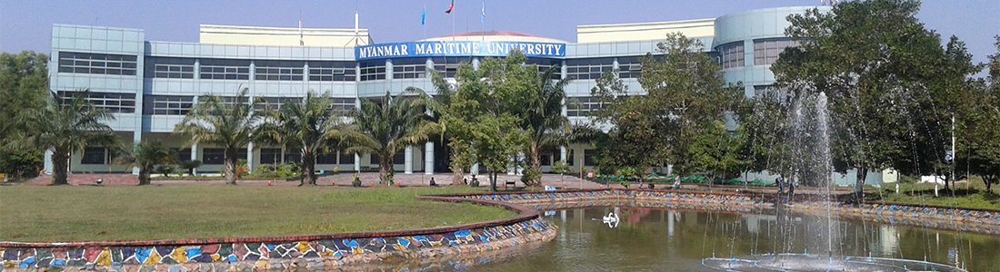
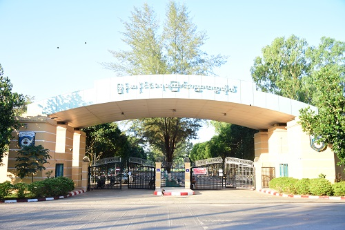
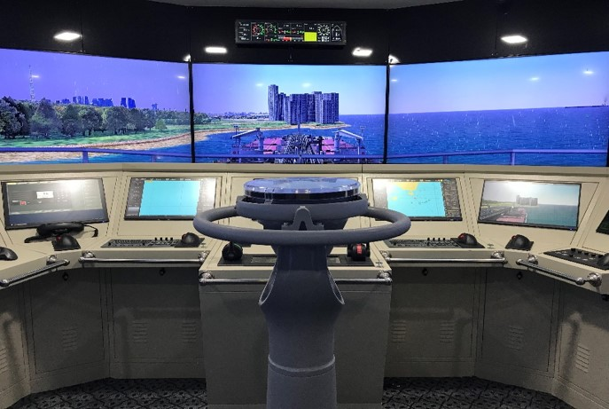
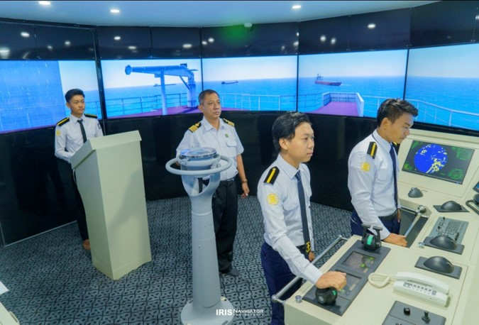
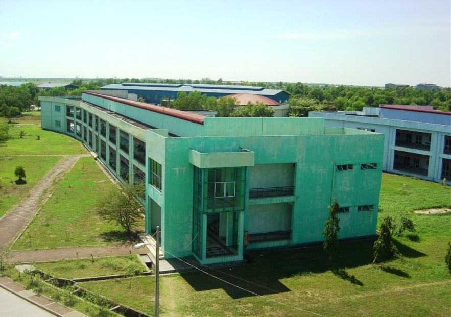
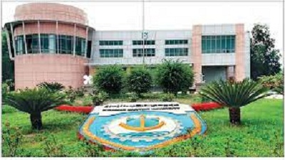

About Myanmar Maritime University
မြန်မာနိုင်ငံ ရေကြောင်းတက္ကသိုလ်သည် ပို့ဆောင်ရေးဝန်ကြီးဌာန၏ စီမံအုပ်ချုပ်မှုအောက်တွင် တည်ရှိပြီး ရေကြောင်းပို့ဆောင်ရေး၊ သင်္ဘောတည်ဆောက်ရေး၊ ဆိပ်ကမ်းနှင့် သင်္ဘောလိုင်းများ စီမံခန့်ခွဲရေး၊ ရေလမ်းကြောင်း ထိန်းသိမ်းရေးနှင့် ပင်လယ်ပြင် အသက်အန္တရာယ် ကင်းရှင်းရေးတို့အပြင် မြန်မာသင်္ဘောသားများ နိုင်ငံခြားထွက် သင်္ဘောများတွင် အလုပ်အကိုင် အခွင့်အလမ်း ရရှိရေးတို့အတွက် ဦးတည်ဆောင်ရွက်လျက်ရှိသော အဆင့်မြင့်ပညာရေး အဖွဲ့အစည်းဖြစ်ပါသည်။
တက္ကသိုလ်ကို ၂၀၀၂ ခုနှစ် ဖေဖော်ဝါရီလ ၁၄ ရက်နေ့တွင် ပြဋ္ဌာန်းခဲ့သည့် မြန်မာနိုင်ငံ ရေကြောင်းတက္ကသိုလ် ဥပဒေ (ဥပဒေအမှတ် ၁/၂၀၀၂) နှင့်အညီ ၂၀၀၂ ခုနှစ် သြဂုတ်လ ၁ ရက်နေ့၌ ရန်ကုန်မြို့၊ ဆင်မလိုက်ရှိ ရေကြောင်းနည်းပညာသိပ္ပံ (IMT) ဝင်းအတွင်း ယာယီစတင်ဖွင့်လှစ်ခဲ့သည်။
ထို့နောက် ၂၀၀၄ ခုနှစ် မတ်လ ၂၉ ရက်နေ့တွင် ခေတ်မီစံချိန်စံညွှန်းများနှင့်အညီ သီးသန့်တက္ကသိုလ်ကျောင်းဝန်းအဖြစ် တရားဝင် ဖွင့်လှစ်ခဲ့ပြီး ယခုအခါ ကျောင်းသား၊ ကျောင်းသူများအား စာတွေ့လက်တွေ့ ထိရောက်စွာ သင်ကြားပေးလျက် ရှိပါသည်။
- ရေကြောင်းလုပ်ငန်းများဖြင့် နိုင်ငံတော် ခေတ်မီဖွံ့ဖြိုးတိုးတက်ရေးအတွက် အထောက်အကူပြုရန်။
- ကျင့်ဝတ်သိက္ခာရှိပြီး ကျွမ်းကျင်မှုပြည့်ဝသော နာမည်ကောင်းရ ရေကြောင်းပညာရှင်များကို မွေးထုတ်ပေးရန်။
- ရေကြောင်းသက်မွေးဝမ်းကျောင်း အတွက် အထောက်အကူဖြစ်စေမည့် သိပ္ပံနှင့် နည်းပညာရပ်များကို သင်ကြားပေးရန်။
- ရေကြောင်းလုပ်ငန်းများ အစဉ်အမြဲ တိုးတက်ဖွံ့ဖြိုးစေရေးအတွက် အစီအစဉ်များနှင့် စီမံဆောင်ရွက်မှုများ ပြုလုပ်ရန်။
- အပြည်ပြည်ဆိုင်ရာ ရေကြောင်းအဖွဲ့ချုပ် (IMO) မှ ပြဋ္ဌာန်းထားသော စံချိန်စံညွှန်းများနှင့် စည်းမျဉ်းများကို သိရှိလိုက်နာရန်။
- ရေကြောင်းလုပ်ငန်း ဖွံ့ဖြိုးတိုးတက်ရေးအတွက် လိုအပ်သော သုတေသနလုပ်ငန်းများကို ဆောင်ရွက်ရန်။
သိပ္ပံနည်းကျ သီအိုရီများနှင့် လက်တွေ့ကျသော ချဉ်းကပ်ဆောင်ရွက်မှုများကို အသုံးပြု၍ -
- နိုင်ငံတော်အတွက် ဘက်စုံပြည့်စုံသော ရေကြောင်းပညာရေးစနစ်တစ်ရပ် ဖော်ထုတ်ရန်။
- နိုင်ငံတကာ ရေကြောင်းအသိုက်အဝန်းက အသိအမှတ်ပြုသည့် ထိရောက်သော ရေကြောင်းပညာရေးနှင့် လေ့ကျင့်ရေးစနစ် ထူထောင်ရန်။
- လက်တွေ့ကျွမ်းကျင်မှုများနှင့် စီမံခန့်ခွဲမှု နည်းပညာများအကြား ထိရောက်စွာ ချိတ်ဆက်ဆောင်ရွက်နိုင်မည့် အရည်အသွေးများကို ပြုစုပျိုးထောင်ပေးရန်။
Degree Programs
Myanmar Maritime University offers degrees and diplomas with duration of Academic years are as follows.
- B.E. (Naval Architecture) - 5years
- B.E. (Marine Engineering) - 5years
- B.E. (Port and Harbour Engineering) - 5years
- B.E. (River and Coastal Engineering) - 5years
- B.E. (Marine Electrical Systems and Electronics) - 5years
- B.E. (Marine Mechanical Engineering) - 5years
- B. Sc. (Hons.) (Nautical Science) - 5years
- Dip. SM.(Postgraduate Diploma in Shipping Management) - 1 year
- Dip. PM. (Postgraduate Diploma in Port Management) - 1 year
- Dip. TLM. (Transport and Logistic Management) - 1 year
- M.E (Port and Harbour Engineering) - 2 years
- M.E (River and Coastal Engineering) - 2 years
- M.E (Naval Architecture) - 2 years
1. Naval Architecture and Ocean Engineering (NA)
ပင်လယ်ရေကြောင်း ကုန်သွယ်ရေးအတွက် သင်္ဘောနဲ့ ရေယာဉ်များကို ကိုယ်တိုင် ဒီဇိုင်းဆွဲ တည်ဆောက်နိုင်ဖို သင်ကြားပေးသည့် Major။
2. Marine Mechanical (MM)
သင်္ဘောအင်ဂျင်နဲ့ စက်ပစ္စည်းစနစ်များကို ဒီဇိုင်းဆွဲ၊ တပ်ဆင်၊ ထိန်းသိမ်းမယ့် Mechanical Engineer များကို မွေးထုတ်ပေးပါသည်။
3. Nautical Science (NS)
သင်္ဘောကို ပင်လယ်ပြင်မှာ ဘေးအန္တရာယ်ကင်းကင်း ပဲ့ကိုင်မောင်းနှင်မယ့် ဦးဆောင်လမ်းပြ ရေကြောင်းအရာရှိ (Deck Officer) များအတွက် သင်ကြားပေးပါသည်။
4. Marine Engineering (ME)
သင်္ဘောရဲ့ နှလုံးသား (Engine Room) ကို ကျွမ်းကျင်စွာ ကိုင်တွယ်မယ့် Marine Engineer များ ဖြစ်လာစေရန် သင်ကြားပေးပါသည်။
5. Marine Electrical System and Electronics Engineering (MESE)
သင်္ဘောပေါ်ရှိ လျှပ်စစ်စနစ်၊ ပါဝါဖြန့်ဖြူးမှု၊ Automation နဲ့ ဆက်သွယ်ရေးစနစ်များကို တာဝန်ယူမယ့် အင်ဂျင်နီယာများကို လေ့ကျင့်ပေးပါသည်။
6.Port and Harbour Engineering (PH)
ဆိပ်ကမ်းများကို စနစ်တကျ စီမံခန့်ခွဲခြင်း၊ ထိန်းသိမ်းခြင်းနဲ့ ဒီဇိုင်းဆွဲ တည်ဆောက်ခြင်းဆိုင်ရာ ပညာရပ်များကို သင်ကြားပေးပါသည်။
7. River and Coastal Engineering (RC)
သဘာဝဘေးအန္တရာယ်မှ ကာကွယ်ရန်နဲ့ ပတ်ဝန်းကျင် တာရှည်တည်တံ့အောင် ထိန်းသိမ်းရေးဆိုင်ရာ မြစ်၊ ချောင်း၊ ကမ်းရိုးတန်း နည်းပညာများကို သင်ကြားပေးပါသည်။
Clubs & Activities
ကျောင်းတွင်း event၊ activity တွေအနေနဲ့ MMUရဲ့ FunFair ကတော့ ကျောင်းသားတွေ ကိုယ်တိုင်ဖန်တီးထားသော creativeဖြစ်တဲ့ ဆိုင်ခန်းများ၊ အရသာရှိတဲ့အစားအသောက်များ၊ ကျောင်းသားတွေရဲ့ အကအလှများ၊ နာမည်ကြီး အနုပညာရှင်များရဲ့ ဖျော်ဖြေမှုများကြောင့် ရန်ကုန်တိုင်းမှာရှိတဲ့ အခြားသော တက္ကသိုလ်များကပါ လာရောက်ဆင်နွှဲကြတဲ့ MMU ရဲ့ Trademark ပွဲတစ်ခုဖြစ်ပါသည်။
အခြားသော Music Club, Dancing Club, Football Club, Basketball Club,Badminton Club နှင့် Gym Club တွေလိုမျိုး Club တွေရှိလို ကိုယ်ဝါသနာပါရာမှာ ပါဝင်နိုင်ပါသည်။
မိုးရာသီ အားကစားပြိုင်ပွဲများ၊ မေဂျာအလိုက် တံခွန်စိုက်ဖလားပြိုင်ပွဲများအပြင် စကားပြောစွမ်းရည်ပြိုင်ပွဲများကိုပါ ကျင်းပလေ့ရှိပါသည်။
Opportunities
⚓️ သင်္ဘောလိုက်ရန် အထူးပြု Major များ (NS, ME, MESE)
အမျိုးသားများသာ တက်ရောက်ခွင့် ရှိပါသည်။ (NS Major သည် မျက်မှန်တပ်သူများ လျှောက်ထား၍ မရပါ)
အရာရှိ (Officer) အဆင့်မှ စတင် လုပ်ကိုင်ခွင့် ရရှိမည်ဖြစ်ပြီး အရည်အချင်းပေါ် မူတည်၍ ရာထူးတိုး မြန်ဆန်ပါသည်။
NS Major: အမြင့်ဆုံး Captain (သင်္ဘောကပ္ပတိန်) အထိ တက်လှမ်းနိုင်ပါသည်။
ME / MESE Major: အမြင့်ဆုံး Chief Engineer (စက်ကဲ) အထိ တက်လှမ်းနိုင်ပါသည်။ (ကုန်းပေါ်တွင်လည်း Engineer အဖြစ် ပြန်လည် ကူးပြောင်း လုပ်ကိုင်နိုင်သည်)
🏗️ ကုန်းတွင်းနှင့် ပြည်ပ အခွင့်အလမ်း အဓိက Major များ (MM, PH, NA, RC)
အမျိုးသား / အမျိုးသမီး နှစ်ဦးစလုံး တက်ရောက်နိုင်ပါသည်။
ဂျပန်၊ စင်ကာပူ၊ ဩစတြေးလျနှင့် အနောက်နိုင်ငံများအထိ အလုပ်အကိုင် အခွင့်အလမ်းများစွာ ရှိပါသည်။
ဆိပ်ကမ်းများ၊ Construction ပိုင်းများ၊ MITT (သီလဝါဆိပ်ကမ်း) နှင့် သက်ဆိုင်ရာ အစိုးရ/ပုဂ္ဂလိက စက်ရုံ၊ ရုံးများတွင် လုပ်ကိုင်နိုင်ပါသည်။
🌟 ပညာသင်ဆု (Scholarship)
ထူးချွန် ကျောင်းသားများအတွက် နိုင်ငံတကာ သင်္ဘောကုမ္ပဏီကြီးများမှ Scholarship များ ပေးအပ်လေ့ရှိပြီး၊ နိုင်ငံခြားတွင် Master Degree ဆက်လက် သင်ယူရန် အခွင့်အလမ်းများလည်း ပွင့်လင်းလျက် ရှိပါသည်။
Qualification
MMU ဝင်ခွင့်လျှောက်လွှာတင်မည်ဆိုလျှင်
တက္ကသိုလ်မှ ထုတ်ပြန်သည့် ကျောင်းဝင်ခွင့်ကြေညာချက်အရ လျောက်လွှာပုံစံများကို သတ်မှတ်ရက်အတွင်း ထုတ်ယူ၊ ဖြည့်စွက်ရမည်။
လျောက်လွှာများကို သန်လျင်မြိုနယ်ရှိ မြန်မာနိုင်ငံရေကြောင်းပညာတက္ကသိုလ် သို လူကိုယ်တိုင် သိုမဟုတ် သတ်မှတ်ထားသော နည်းလမ်းအတိုင်း တင်သွင်းရမည်။
ကျန်းမာရေးစစ်ဆေးခြင်းနှင့် လူတွေ့စစ်ဆေးခြင်းများကို တက္ကသိုလ်၏ စည်းကမ်းချက်များနှင့်အညီ ဝင်ရောက်ဖြေဆိုရမည်။
ရမှတ် ပျမ်းမျှ: အနည်းဆုံး လျှောက်ထားနိုင်သည့်အမှတ် 420-435၊ ကျောင်းဝင်ခွင့် သေချာစေရန် 470 ဝန်းကျင်၊ မိမိလိုချင်သော Major ရရှိရန် 480-500 ဝန်းကျင် ရရှိထားပါက ပိုမို စိတ်ချရပါသည်။ (နှစ်စဉ် လျှောက်ထားသူ ဦးရေပေါ် မူတည်၍ ပြောင်းလဲမှု ရှိပါသည်)
ဝင်ခွင့် စာမေးပွဲများ: Eye Test၊ IQ Test နှင့် Psycho Test များ ဝင်ရောက်ဖြေဆိုရပါမည်။
ဆေးစစ်ချက် (Medical Checkup): အရပ်၊ အလေးချိန်၊ ECG၊ HIV၊ Hepatitis B/C စသည်တို စစ်ဆေးပါသည်။ (Colorblind အမြင်အာရုံ ချိုယွင်းချက် ရှိသူများနှင့် B/C ပိုး ရှိသူများ တက်ရောက်ရန် ခက်ခဲပါသည်)
ဝင်ခွင့်အနိမ့်ဆုံးဖြတ်မှတ်မျာ
၂၀၂၃ ခုနှစ် - ကျား (၄၄၅) မှတ်၊ မ (၄၄၉) မှတ်
၂၀၂၄ ခုနှစ် - ကျား (၄၃၅) မှတ်၊ မ (၄၃၇) မှတ်
၂၀၂၅ ခုနှစ် - ကျား (၄၆၄) မှတ်၊ မ (၄၇၀) မှတ်
Major အလိုက် အနိမ့်ဆုံးဖြတ်မှတ်များ
| Major | 2024 | 2025 |
|---|---|---|
| NS | 461 | 475 |
| ME | 453 | 473 |
| EE | 436 | 465 |
| NA | 447 | 465 |
| MM | 435 | 465 |
| PH | 460 | 477 |
| RC | 435 | 465 |
ဘယ်လိုလူတွေ တက်ရောက်သင့်သလဲ
MMU ကျောင်းဆင်းများအတွက် အလုပ်အကိုင် အခွင့်အလမ်း ပေါများပြီး နိုင်ငံခြားဝင်ငွေ ရှာဖွေနိုင်သည့် လမ်းကြောင်းကောင်းများစွာ ရှိပါသည်။ အဆင့်မြင့် ရေကြောင်းပညာရပ်တွေကို စိတ်ဝင်စားသူများအတွက် MMU ကျောင်းတော်ကြီးမှ နွေးထွေးစွာ ကြိုဆိုလျက် ရှိပါသည်။
တက္ကသိုလ်အကြောင်း ပိုမိုသိရှိလိုပါက: